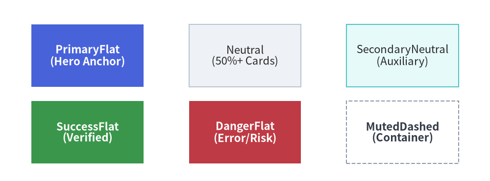

Styles & Theming
In complex technical diagrams, manually configuring RGB color codes, line widths, and font sizes for every single element leads to inconsistent branding and brittle drawing code.
Drawlib resolves this with a systematic design token system in drawlib.styles and drawlib.preset_styles.
1. Overview of Semantic Styles

2. Active Design Tokens (drawlib.styles)
The active design system is imported from drawlib.styles:
from drawlib.styles import Colors, Styles
Styles: The active catalog of pre-configuredStyleobjects (defaults toDefaultStyles).Colors: The active palette of color definitions (defaults toDefaultColors).
3. Semantic Role & Variant Matrix
Every style token is composed of a Semantic Role (or color name) and an optional Visual Variant:
Semantic Roles:
Primary: Main structural components and key architectural blocks.Secondary: Secondary supporting services and auxiliary nodes.Accent: Emphasized focal points and action triggers.Neutral: Calm card surfaces, general services, and worker nodes.Success: Healthy statuses, successful states, and completed steps.Danger: Error conditions, security threats, and terminating gates.Warning: Warnings, deprecations, and pending queues.Muted: Background boundaries, subtle partitions, and inactive states.
Common Variants:
| Variant Suffix | Example | Visual Appearance |
|---|---|---|
Flat |
Styles.PrimaryFlat |
Solid fill color without border lines. |
Bordered |
Styles.PrimaryBordered |
Standard fill with a contrasting border. |
Bold |
Styles.PrimaryBold |
Heavy stroke for lines and borders. |
Thin |
Styles.PrimaryThin |
Thin stroke with thin font weight. |
Outline |
Styles.PrimaryOutline |
Transparent fill with a colored border line. |
Dashed |
Styles.MutedDashed |
Dashed border stroke (ideal for VPCs and clusters). |
Dotted |
Styles.PrimaryDotted |
Dotted border stroke for ephemeral or preview components. |
Neutral |
Styles.BlueNeutral |
Tinted card with ultra-light fill, soft border, high-contrast text. |
NeutralFlat |
Styles.BlueNeutralFlat |
Borderless tinted card with high-contrast text. |
4. Typography & Icon Styles
Preset styles are also applied to text labels and icons:
# Use WhiteBold for text inside filled dark containers
rectangle((50, 25), width=30, height=20, style=Styles.PrimaryFlat, text="Server", text_style=Styles.WhiteBold)
line((20, 25), (80, 25), arrow_head="->", style=Styles.DarkBold)
5. Customizing & Deriving Styles (.patch())
Styles in Drawlib are immutable data models. To create custom variations without rebuilding a Style from scratch, use the .patch() method to override specific attributes:
from drawlib.styles import Styles
from drawlib.preset_colors import Colors
# 1. Derive a custom branded node card with rounded corners
custom_card = Styles.PrimaryNeutral.patch(
shape_line_width=2.0,
shape_line_color=Colors.Blue,
shape_r=2.0,
text_size=11.0,
)
# 2. Derive a high-contrast danger badge
danger_badge = Styles.DangerFlat.patch(
shape_line_width=1.0,
shape_line_color=(255, 255, 255, 0.8),
text_size=9.0,
)
Interpolating Intermediate Colors (get_intermediate_color & get_intermediate_colors)
When creating smooth color transitions (such as multi-frame animations or custom heatmaps), use the pure helper functions in drawlib.styles:
get_intermediate_color(color1, color2) -> Color: Returns the exact 50% midpointColorbetweencolor1andcolor2.get_intermediate_colors(color1, color2, num=1, *, include_ends=False) -> list[Color]: Returnsnumevenly spaced intermediateColorobjects betweencolor1andcolor2(ornum + 2colors including both endpoints wheninclude_ends=True).
from drawlib.styles import Colors, Styles, get_intermediate_color, get_intermediate_colors
mid = get_intermediate_color(Colors.White, Colors.Primary)
steps = get_intermediate_colors(Colors.White, Colors.Primary, num=3, include_ends=True)
6. Official Preset Style Catalogs & Typography Patching
Drawlib includes three official style catalogs in drawlib.preset_styles:
DefaultStyles: Clean, balanced modern tech palette (Tailwind/VitePress inspired).GoogleStyles: Material Design inspired palette (Google Blue, Red, Yellow, Green).MonochromeStyles: Publication-grade grayscale palette for black-and-white academic papers and official specifications.
Universal Typography Patching (.patch_font())
When publishing documents in international languages (such as Japanese, Chinese, or Korean) or applying corporate typography, use .patch_font() to replace font families across all predefined tokens in one call:
from drawlib.fonts import FontJapanese # or FontRoboto, FontChinese, etc.
from drawlib.preset_styles import GoogleStyles
# Patch all styles with unified typography weights
Styles = GoogleStyles().patch_font(
regular=FontJapanese.SANSSERIF_REGULAR,
bold=FontJapanese.SANSSERIF_BOLD,
thin=FontJapanese.SANSSERIF_THIN,
)
Switch the active preset globally via CLI flag during build:
$ uv run drawlib build html docs_src/ --styles google